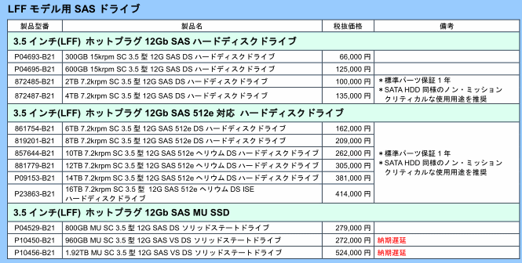
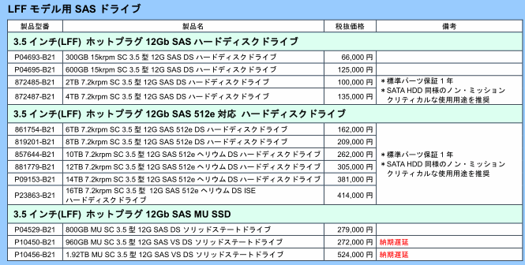

サーバー見積もりリファレンス
サーバー見積もり作業は手間がかかって儲けの少ない厄介な作業です。
本資料は主に小中規模で使用する仮想化用サーバー見積もりを必要十分なスペックで素早く作成するためのリファレンスです。
目次 兼 まとめ
1. 要件
- 必ず読む。
- 必要な条件を見極める。 ストレージはくどい説明を行っていないSASを選択する。
2. 筐体
- 必ず構成ガイドを読む。
- もう2ソケット筐体は選ばない。
- LOMを見よ
- 増設スロット
- ベゼルいらない。ケーブルマネージメントアームいらない。ラックレールはスライドする一番安いやつ。DVDもいらないケースあり。
- SAS 2.5インチベイのものを選択する。3.5インチは下火、種類が少ない、条件に合致しない。
3. CPU
- 「コア数」を見る。ソケットやスレッド数ではない。
- コア数が多いから高額というわけではない
- 最新の世代を選択する
- 最低クロック数に注意
4. メモリ
- 少し高額になっても2枚以上の偶数枚をチャネルを分けて構成する
- 32GBモジュールが割安, 8GBはとても割高
- DDR4-2666とDDR4-3200、CPUに合うのはどっち？
5．ストレージ
- SAS10000rpm HDDで3-4台のハードウェアRAID5構成にする。
- RAIDカードのスペックをよく読み、hotswapハードウェアRAID 0,1,5サポートでキャッシュ1Mバイトを選択。
- Boot Optimizedストレージ（Dellのブート用SSDで10万+）、SD CARDブート、USBブート等メリットないので外す
1. 要件
- 必ず読む。
- 必要な条件を見極める。ストレージはくどい説明を行っていないSASを選択する。
ESXi 7.0の要件を見てみる
要件抜粋
- VMware Compatibility Guide
- CPUは2コア以上
- メモリは8G以上
- ストレージはインストール領域だけで142GB以上
- vSphereの場合はVCSA分も確保すること
1. VMware Compatibility Guide
例としてDell R6515を指定して検索すると7.0, 6.7u3, 6.5u3にヒットする
- 検索ヒットすれば、CPUのIntel VT/AMD RViやNX/XDビットなどの細かなハードウェア仕様はクリアできている
- 検索ヒットしない場合は動作に支障があるということ。他のハードウェアを選定すべき
2. CPUは2コア以上
- 2ソケットや2スレッドではない
- ゲストOS要件で最低クロック数を指定している場合がある
3. メモリは8G以上
- ハイパーバイザー分だけで8GB確保すること
- ゲストOSの必要メモリを積み上げること
- メモリ共有機能に期待しないこと
4. ストレージはインストール領域だけで142GB以上
- くどい説明を行っていないSASを選択する
5. vSphereの場合はVCSA分も確保すること
RedHat KVMの要件を見てみる
要件抜粋
- Intel VT/AMD RVi対応のみ
実際にはESXiと同じ要件で選出
Hyper-Vの要件を見てみる
要件抜粋
- 機械翻訳で何言ってるかわからねぇ
- 英語のリンクを読んでも本質的なことが書かれていないのでまたわからねぇ
実際にはESXiと同じ要件で選出
ただし、物理サーバーへWindows Serverをインストールして使用する場合はWindows Serverの要件分を追加する。
Winmdows Server 2019 システム要件
2. 筐体
- 構成ガイドを見よ
- もう2ソケット筐体は選ばない。
- LOMを見よ
- 増設スロット
- ベゼルいらない。ケーブルマネージメントアームいらない。ラックレールはスライドする一番安いやつ。DVDもいらないケースあり。
- 2.5インチベイのものを選択する。3.5インチは下火、種類が少ない、条件に合致しない。
構成ガイドを見よ
- 客先に合った奥行きを必ずチェック
- PCIライザーなどの組み合わせ方法の確認
- LOMの確認
- その他すべての組み合わせ可能なハードウェアが載っている
もう2ソケット筐体は選ばない。
ダイあたりのコア数が2桁を超えるのが普通の時代になり、ソケット数を考慮する必要がなくなった。明確にコストが安い1ソケットを選択すべき。
LOMを見よ
LOM(LAN On Motherboard)≒標準NICで、HP DL360であれば1GE 4ポート、Dell R6515であれば25GE 2ポート（!?）が標準でついている。これは他のインターフェースに変更できる。
- 追加NICを考える前にこれを見よう
- Dellは1GE 2portにするとものすごく値段が下がる
増設スロット
NIC等を追加する場合、増設スロットをPCIライザーの組み換えで増やすケースがある。
- 例：Dell R6515では標準で4portの1GbEを持つことができるが、ライザーなし、1スロット増設ライザー、2スロットライザーの3種類選択できる。最大12portの1GbEを搭載できる
(参考) 1GbE 4ポートNICをはじめとして、メーカーを選べるケースがある場合はBroadComを避け、Intelにする。ない場合はMellanox等（SFP等にも注意）。特に新しいモデルのNICはBroadComだと非常にトラブるので注意。
ベゼルいらない。ケーブルマネージメントアームいらない。ラックレールはスライドする一番安いやつ。DVDもいらないケースあり。
- ベゼル、ケーブルマネージメントはいらないよね？
- ラックレールは固定のものを選ぶと後悔するので一番安いスライドのもの
- PXEブートによる復旧体制等の場合、DVDドライブがあるとインストール終了後勝手に開くなどの害があるので注意
2.5インチベイのものを選択する。3.5インチは下火、種類が少ない、条件に合致しない。
- 2.5インチのほうが明らかに選択肢が多い。同一容量・回転数であればほぼ同じ価格。
DL360 SFF(SAS 2.5インチドライブ筐体)とLFF(SAS 3.5インチドライブ筐体)の比較
ただし、SFFは2ページ目あるが割愛
 

3. CPU
- 「コア数」を見る。ソケットやスレッド数ではない。
- コア数が多いから高額というわけではない
- 最新の世代を選択する
- 最低クロック数に注意
「コア数」を見る。ソケットやスレッド数ではない。
- ソケット数を1にしてコストを下げること
- スレッド数はCPU数としてカウントしてはいけない。おまけ機能と認識すること。
コア数が多いから高額というわけではない
コア数が多いから高額というわけではない。低スペックで高額な場合や、「構成ガイド」にあるのにWebページで選択できないものもあり。見積もりをもらうまで割安なCPUはわからない。時間がある場合は複数指定して見積もる。
最新の世代を選択する
同一クロック、同一コア数でも世代が変わると~20%性能が向上するので、なるべく最新の世代を選択する
いまどの世代なのかは、メーカーのページよりWikipediaのほうが見やすい
Wikipedia Xeon
Copper Lake サーバ用プロセッサ 2020年6月18日発表
Wikipedia EPYC
第二世代 サーバ向け(Rome)
最低クロック数に注意
ゲストOSの要件に2.00GHz以上のクロック数などと書かれていることがある
4. メモリ
- 少し高額になっても2枚以上の偶数枚をチャネルを分けて構成する
- 32GBモジュールが割安, 8GBはとても割高
- DDR4-2666とDDR4-3200、CPUに合うのはどっち？
少し高額になっても2枚以上の偶数枚をチャネルを分けて構成する
Wikipedia Xeon
Copper Lakeで6チャネルをサポート
Wikipedia EPYC
Romeで8チャネルサポート
入札は価格重視なので、パフォーマンス問題が気にならないのであれば１チャネルのみ実装もあり得る。ただし、導入後にパフォーマンス問題になる可能性が高い。枚数を変更しても見積もりを取るとあまり金額が変わらないケースはある。
32GBモジュールが割安, 8GBはとても割高
DELL R6515
2020年現在、16GBモジュールが32GBの次に割安なので、16GBで構成する
48GB必要、という場合はとても難しい。8GB 6枚より16GB 3枚のほうが明らかに安い
DDR4-2666とDDR4-3200、CPUに合うのはどっち？
Wikipedia EPYC
DDR4-2666よりDDR4-3200のほうが高性能で少し価格が高いが、第一世代EPYCでは2666以上のクロックのものを取り付けても意味がない。
5．ストレージ
- SAS10000rpm HDDで3-4台のハードウェアRAID5構成にする。
- RAIDカードのスペックをよく読み、hotswapハードウェアRAID 0,1,5サポートでキャッシュ1Mバイトを選択。
- Boot Optimizedストレージ（Dellのブート用SSDで10万+）、SD CARDブート、USBブート等メリットないので外す
SAS10000rpm HDDで3-4台のハードウェアRAID5構成にする。
唯一の可動パーツであるHDDは壊れやすい。RAID構成で容量とパフォーマンスを稼げるRAID5がおすすめ
- 要件に15000RPMと書いてなければSAS15000rpmは必要ない。
- NL SASやSATAは1年保守しか契約できなかったり、著しくパフォーマンスが低下するので避ける
- M.2は2020年現在は割高
RAIDカードのスペックをよく読み、hotswapハードウェアRAID 0,1,5サポートでキャッシュ1Mバイトを選択。
- 構成ガイドで確認する
Boot Optimizedストレージ（Dellのブート用SSDで10万+）、SD CARDブート、USBブート等メリットないので外す
- 見積もりのWebサイトなどでデフォルトでBoot Optimizedストレージが選択されていたりするが必ず外すこと。